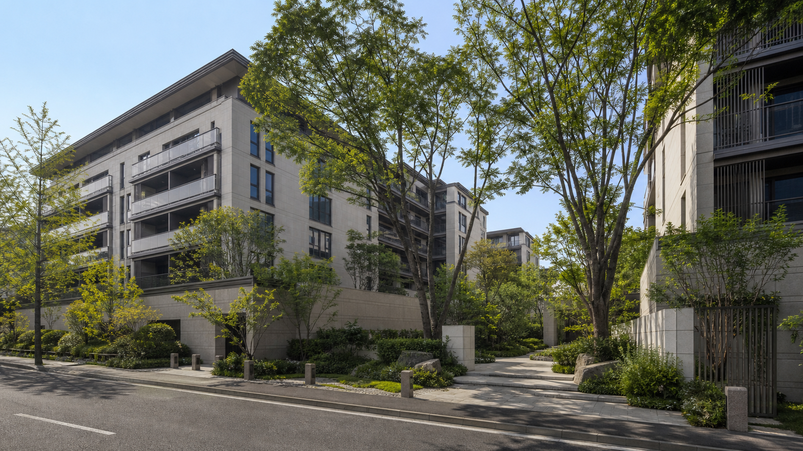
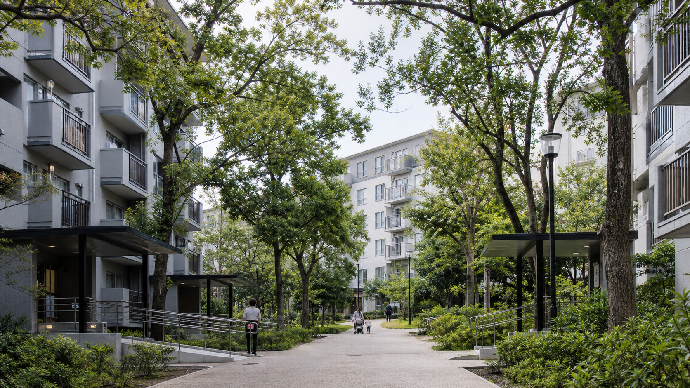
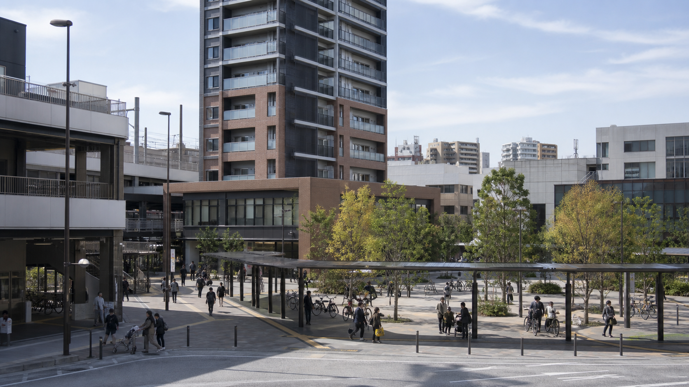
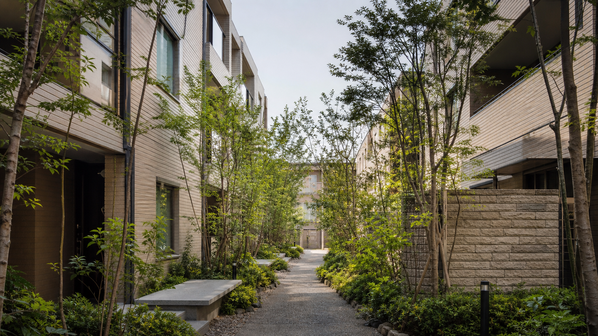
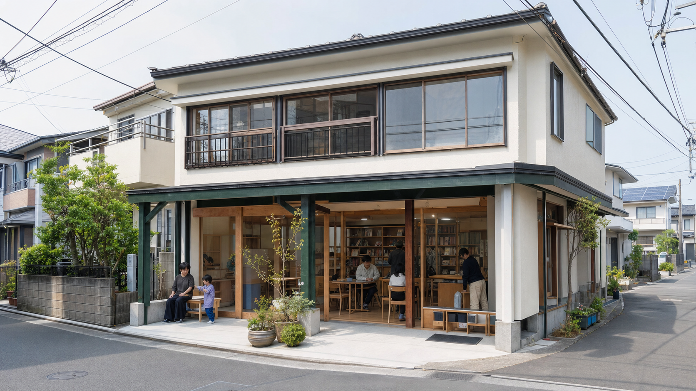
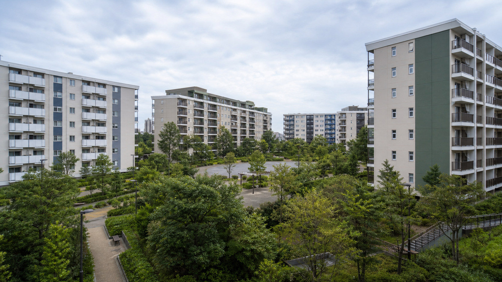

本形町二丁目旧住宅地再整備事業
世田渋谷区本形町二丁目 / 地上4階・2棟・248戸
旧住宅地の更新にあわせ、中央の中庭と東側緑道の連続性を生かした低層住宅を整備する計画です。
PROJECTS
地域ごとの条件に応じて、住宅と街の更新を積み重ねてきました。
世田渋谷区本形町二丁目 / 地上4階・2棟・248戸
旧住宅地の更新にあわせ、中央の中庭と東側緑道の連続性を生かした低層住宅を整備する計画です。

京央区桜木町 156戸
既存樹木を街路沿いに残し、住棟間に小さな庭を連ねた集合住宅です。

北城市緑ヶ丘 5棟・312戸
居住を継続しながら給排水設備と共用照明を更新し、集会室の使い方を見直しました。

千代木区西千代木 住宅・店舗・広場
駅前の歩行動線を再編し、住宅と地域店舗、小広場を一体で整備しました。

南代田区楠町 94戸
南北に抜ける通り庭と、可変性のある住戸計画を組み合わせた低層住宅です。

城西市東森 地域拠点1施設
空き区画を改修し、学習、仕事、地域活動に使える拠点として運営検証を行いました。

青葉市台町 8棟・486戸
断熱、設備、外構を段階的に改修し、居住者参加で長期管理計画を更新しました。
このWebサイトの内容はフィクションであり、実在のお店・人物・団体とは一切関係がありません。